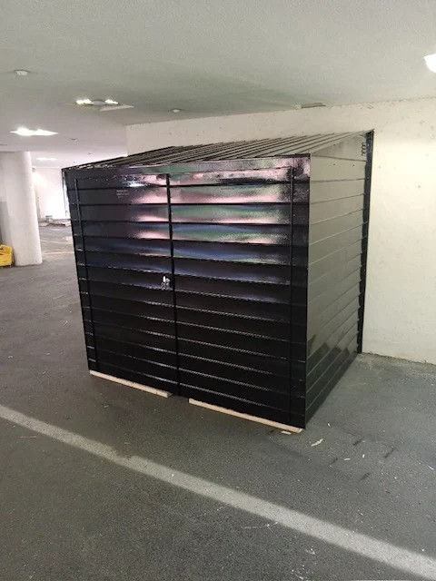

The Complete Cellar Door Installation Process: What Brooklyn Property Owners Should Know
Proudly serving Brooklyn and the surrounding communities.
Steel Masters NYCProudly serving Brooklyn and the surrounding communities.
Steel Masters NYCBrooklyn's brownstones and commercial buildings share a common structural feature that often goes unnoticed until it fails: the sidewalk cellar door. These steel-framed access hatches are embedded directly into public sidewalks and endure continuous foot traffic, weather exposure, and the weight of delivery vehicles throughout their working life. When a cellar door warps, rusts through, or becomes a tripping hazard, property owners face both a liability risk and a compliance issue with sidewalk installation standards. Understanding the full installation process — from initial site assessment through final sign-off — allows Brooklyn property owners to plan accurately, budget appropriately, and choose the right steel fabricator for the job.
Steel Masters NYC, Brooklyn's steel fabricator operating since 1972, has installed hundreds of sidewalk cellar doors across Kings County and the broader New York City metro area. The company brings deep institutional knowledge of sidewalk load specifications, structural requirements, and the unique challenges posed by Brooklyn's mix of pre-war and modern building stock. Property owners in Bed-Stuy, East Flatbush, Crown Heights, and beyond rely on Steel Masters NYC for cellar door work that passes inspection the first time. sidewalk cellar door installation
Every successful cellar door installation in Brooklyn starts with a thorough site assessment. A qualified steel fabricator will visit the property to measure the existing opening dimensions, evaluate the condition of the surrounding sidewalk, assess the structural integrity of the cellar frame, and document any non-standard features that will affect the fabrication spec. In Brooklyn, where cellar openings can vary significantly between blocks depending on the era of construction, this step is not optional. Off-the-shelf door units rarely fit without modification. At Steel Masters NYC, site assessments are used to generate precise fabrication drawings before any steel is cut, ensuring the finished unit fits perfectly and meets all dimensional requirements.

Once site measurements are confirmed, the fabrication phase begins at the shop. For Brooklyn installations, cellar door frames are typically fabricated from heavy-gauge structural steel, ensuring sufficient load capacity for pedestrian and light vehicle traffic. The door leaves — the flat panels that sit flush with the sidewalk — are constructed from steel plate with a diamond tread pattern for slip resistance and ADA compliance where required. All welds are ground smooth and the finished unit is coated with a rust-inhibiting primer. Steel Masters NYC fabricates all components in-house, which means shorter lead times and tighter quality control compared to fabricators who source pre-made components and simply adapt them on-site.
Installing or replacing a cellar door in Brooklyn requires coordination with city agencies for any work affecting the sidewalk. Project documentation must describe the scope of work, list the licensed contractor, and in some cases be accompanied by engineering documentation. Steel Masters NYC handles project coordination as part of the installation process, drawing on decades of experience navigating New York City's requirements. Property owners in ZIP codes like 11212, 11213, and 11233 often face borough-specific processing timelines, and having an experienced local fabricator manage this step prevents costly delays.

The timeline for a complete cellar door installation in Brooklyn — from initial site visit through final sign-off — typically spans two to four weeks, depending on processing speed, fabrication queue, and site conditions. The fabrication itself usually takes several days once materials are sourced. Installation on-site is typically completed within one to two days for a standard single or double-leaf unit. Post-installation, the site must be restored to meet sidewalk standards. Brooklyn property owners should plan for some business disruption during the installation day, particularly for commercial properties where the cellar is an active storage or utility space. Steel Masters NYC provides a detailed project schedule upfront so clients can plan accordingly.
Cellar door replacement demand in Brooklyn is highest in neighborhoods with the oldest building stock. East New York, Brownsville, East Flatbush, and Bushwick all have high concentrations of pre-war residential and commercial buildings where original cellar doors have long exceeded their service life. Bed-Stuy and Crown Heights see consistent demand driven by renovation activity as properties change hands and owners invest in upgrades. metal fabrication New York Steel Masters NYC's location at 135 Liberty Ave in ZIP 11212 puts the shop within easy reach of all these neighborhoods, making mobilization fast and cost-efficient for property owners throughout eastern and central Brooklyn.
Property owners in Brooklyn should look for several clear indicators that a cellar door has reached the end of its serviceable life. Visible rust penetrating through the steel plate, warping or deflection that prevents the door from seating flush with the sidewalk, hinges that have seized or broken, and any gap between the door edge and the frame wide enough to catch a shoe heel are all urgent warning signs. A cellar door that bounces or flexes underfoot is a structural concern and a liability risk under NYC premises liability law. Beyond safety, a failing cellar door can allow water infiltration that damages below-grade storage and mechanical spaces — a costly secondary problem that proper replacement eliminates.
Steel Masters NYC serves customers throughout Brooklyn and Kings County, including Crown Heights, Bed-Stuy, East New York, Brownsville, East Flatbush, Flatbush, Bushwick, Red Hook, and Bay Ridge. Whether you're in Canarsie or Williamsburg, our steel fabrication team is nearby and ready to handle your cellar door installation, staircase fabrication, or custom railing project.